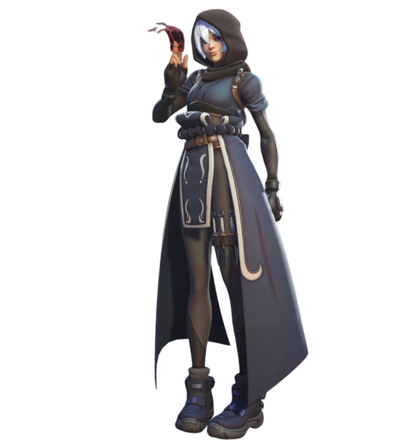
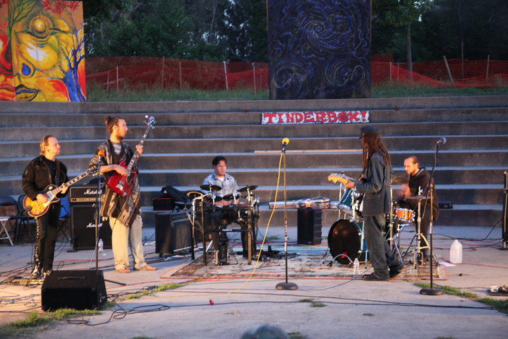

Video games have existed for as long as I have. Atari, NES, Super Nintendo, Sega Genesis, TurboGrafx-16, PlayStation, N64 — they were simply part of the world I grew up in, the way television or music was. In high school I built my first PC and found Unreal Tournament and Counter-Strike, and for a while that was serious business.
Then I stopped. Not deliberately — life moved in a different direction. That period had two parallel tracks running simultaneously. One was inward: the teaching paths you'll find in the Teachings section — Sufi practice, Fourth Way work, Kundalini, meditation, somatic training. The other was musical. I was deep in Acid, FruityLoops, and Reason before eventually landing on Ableton Live. I played in bands — Ellipses, a five-piece experimental electronic/acoustic instrumental group, and Temple Cats, started by Cheshire Chillaxian. I taught myself acoustic guitar, bass, keys, and drums, and when I eventually hit a wall I hired a piano teacher for music theory. Gaming didn't leave much room in all of that, and I didn't miss it.
When I eventually built a new PC and discovered Battlefield 4 and Overwatch, something had changed. Not the games — me. I found myself watching my own reactions in a way I hadn't before.
The Fourth Way teaches that any circumstances in the external world can serve as an impetus for self-observation and self-remembering. Most people, most of the time, are identified — absorbed in whatever is happening, run by it rather than present to it. Games are a particularly vivid laboratory for this. The emotional stakes feel real: the thrill of a good play, the sting of a loss, the spike of frustration when a teammate does something baffling. People have always gotten wrecked by these responses. Controllers through televisions. Rage quits. The whole vocabulary of gamer anger has become a cultural fixture.
But none of that is actually about the game. It's about identification — the gap between stimulus and response collapsing to zero, automatic reaction filling the space where choice could be.
With the right orientation, a match becomes a session. The question isn't just whether you win or lose — it's whether you noticed the moment before you got swept away, whether you caught the contraction in your chest before it became a reaction, whether you came back to yourself after getting hit. The game provides the pressure. What you do with that pressure is the practice.
These days gaming is rare for me — a genuine luxury of time. When it happens, this is the frame I bring to it.

TEMPLE CATS — LIVE